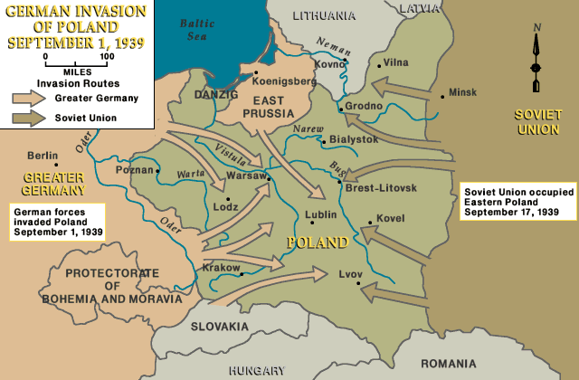
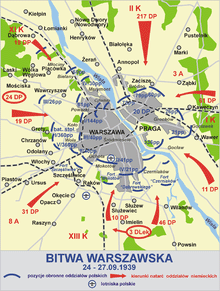

“The German-Soviet Nonaggression Pact” or as it’s also known Molotov-Ribbentrop Pact”. This was a pact signed between The Soviet Union and Germany on the 23th of august 1939. The pact would secure neutrality between the Soviet Union and Germany. However, it was also secretly a plan to divide eastern Europe between the two powers.
The Invasion was set to start on the 25th of august 1939 but was delayed due to Britain assuring the independence of Poland. Hitler thought that he could remain at peace with Britain but ultimately decided to Invade on September 1st. The Soviet Union Invaded Poland on the 17th of September after they signed a peace treaty with Japan. On a separate note, Britain and France only declared war on Germany even though the Soviet Union also Invaded.
Early in the morning on September 1st the German Air Force (Luftwaffe) flew into Poland and bombed towns and airfields while German destroyers attacked the polish fleet. At 8 a.m. around 1.5 million German troops crossed the Polish border. The Germans used the method of Blitzkrieg, involving airplanes bombing strategic targets followed up by tanks and infantry encircling the defenders who often surrender or are annihilated. The German army were also much more technically advanced than the polish army.

Map of the invading armies. Source
After hearing of the invasion on the 2nd of September, the allied governments demanded Germany to withdraw by the 3rd or war would be declared, no answer was received so France and Britain declared war on Germany. A week after the initial invasion the Germans had advanced nearly 140 (225 km) and were on the outskirts of Warsaw, Poland’s capital. Poland officially surrendered on the 27th of September 1939.
Siege of Warsaw: The polish government along with most of the police and firefighters had evacuated Warsaw when the Germans arrived. Warsaw was left with a few regiments of Infantry and one regiment of artillery. By September 8th the German army had reached the outskirts of Warsaw and were advancing on the city.

Map of Warsaw. Source
The polish General Walarian Czuma was chosen to organize the defense of the city. With the help of civilian volunteers and forces from other routed armies they managed to hold the city surprisingly well. Czuma had enough material and men to hold the city for several more weeks but due to the Luftwaffe’s constant bombardment of water and food storages the city’s civilian population suffered heavily. By now the Soviet Union had entered the war and the situation seemed hopeless. On the 26th of September General Juliusz Rómmel began capitulation talks with the Germans and a cease fire was ordered on the 27th. 140.000 Prisoners of war were taken. However before and during the surrender the remaining garrison started to hide weapons and other heavy armaments to later be used in the Warsaw uprising in 1944.
#/media/File:Warszawa_obrona_1939.png){kind=link}